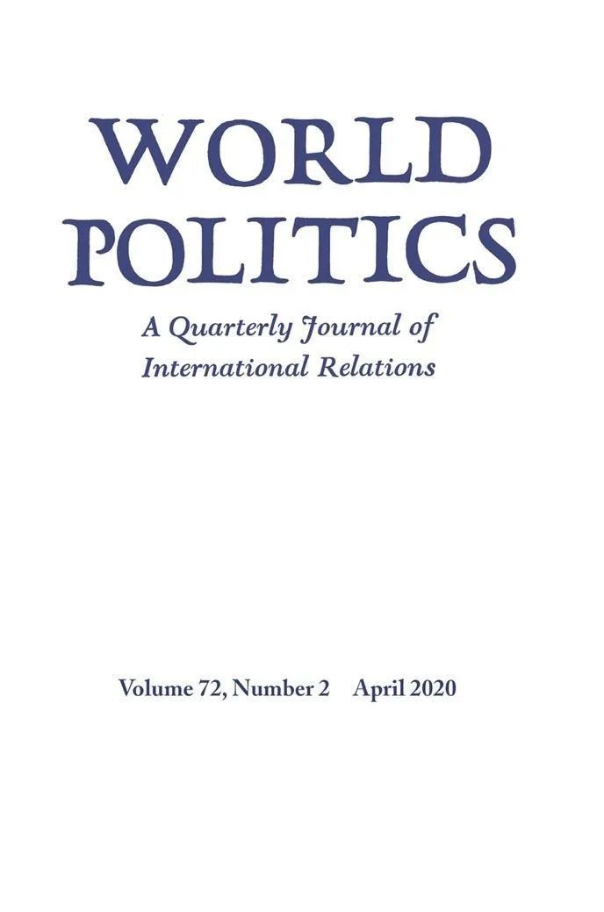
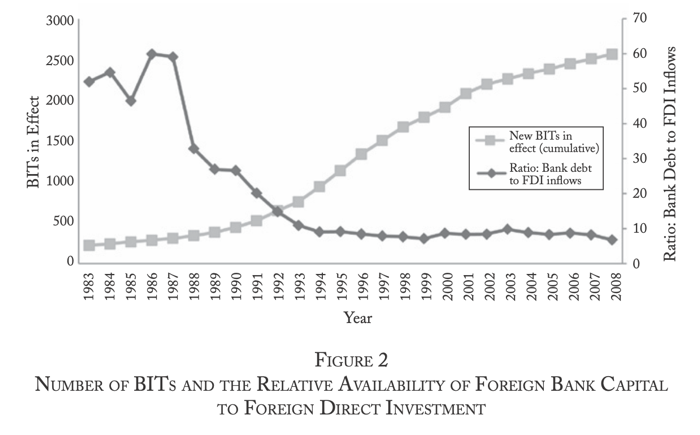
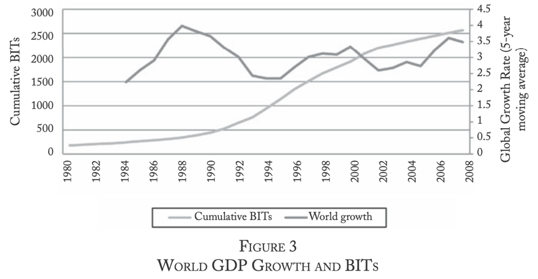
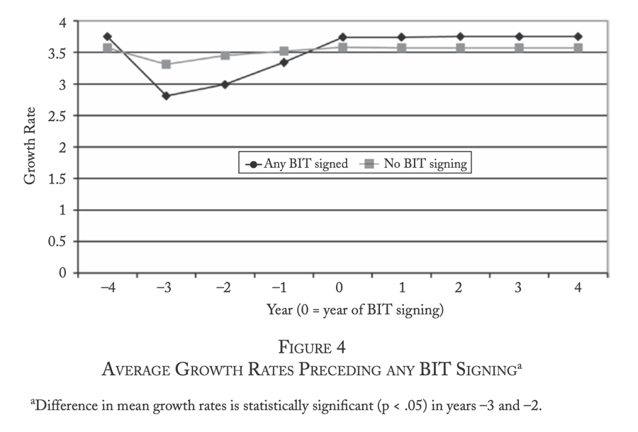
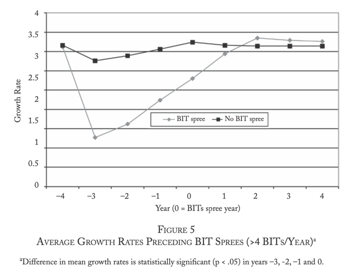
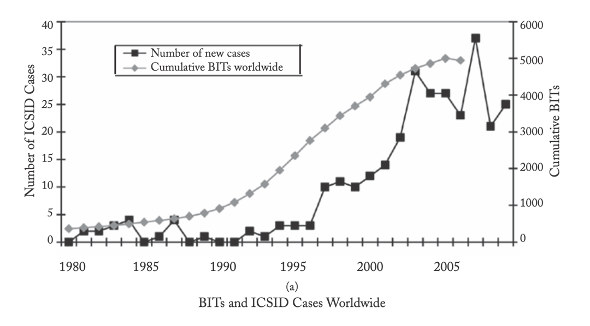
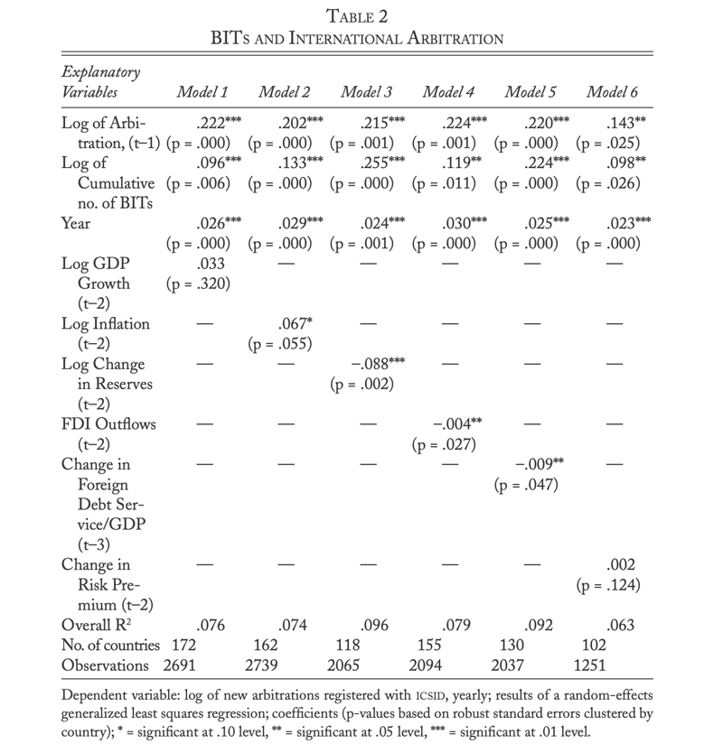
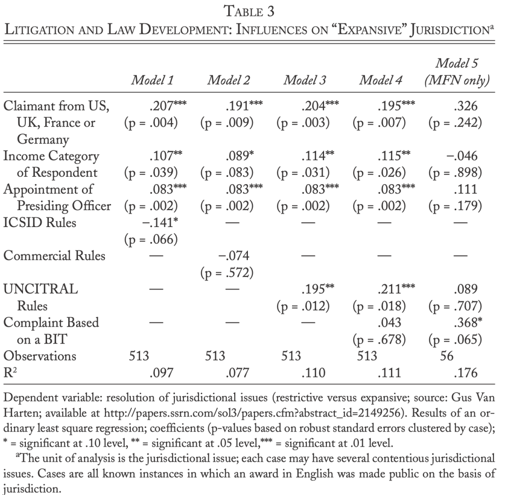

收录于合集

作品简介
【作者】 Beth A. Simmons，国际关系著名学者，宾夕法尼亚大学法学院教授，研究领域为国际政治经济学、国际法与国际人权。
【编译】 李玉婷(国政学人编译员 北京大学国际政治经济学硕士生)
【校对】 许文婷
【审核】 扎西旺姆
【排版】 马璐
【美编 】聂涵琳
【来源】 Simmons, B. A. (2014). Bargaining over BITs, arbitrating awards: The regime for protection and promotion of international investment. World Politics., 66 , 12.
期刊简介

World Politics（《世界政治》）创刊于1948年，是享誉国际的政治科学季刊，内容涵盖国际关系和政治科学的各个领域，其主编是Deborah J. Yashar。该期刊欢迎的投稿类型为具有理论和实证贡献的研究类文章，以及有关国际关系和比较政治问题的评论性文章。根据Journal Citation Reports，2018年该期刊的影响因子为3.368，在91种国际关系类期刊中位列第7名，在196种政治科学类期刊中位列第15名。
双边投资协定的谈判、仲裁裁决：保护和促进国际投资的机制
Bargaining over BITs，Arbitrating Awards：The Regime for Protection and
Promotion of International Investment **
**
Beth A. Simmons
推荐语
双边投资协定的签订本是为了促进资本的流动，却带来了国际仲裁激增的后果。本文试图探讨这一现象背后的根源。做出可信承诺的必要性与权力的不对称等因素之外，本文指出，经济困难也是造成谈判过程中东道国让步的原因之一，并对协定签订的治理后果进行了实证分析。
摘要
过去三十年里，国际直接投资规则得到了迅速的发展与传播。关于国家签订这些规则的原因及其对资本流动之影响的研究有很多，但是对于这一机制治理后果的研究较少。本文探讨了国际投资机制的两个特点：分散的投资规则与投资者的特权地位。分散的规则造成了达成双边投资协定过程时的竞争环境，增强了投资者的议价能力。当发展中国家议价能力较差时，它们倾向于做出让步，而这又与经济的低迷程度密切相关。一旦达成协定，投资者与东道国政府之间的争端将激增。对于这一现象，各国政府正在逐渐寻求重新谈判。结论之一是，不仅要考虑双边投资协定是否吸引资本（这几乎是所有有关双边投资协定的实证研究的重点），而且还应研究国际投资机制的治理后果。
文章导读
01
背景：国际贸易与国际投资机制的差异
尽管国际贸易机制和国际投资机制都是为了促进国际经济合作，但是在作者看来，这两者有很大的差异，至少表现为以下两个方面。
一是集中程度的不同。
国际贸易相关的法律很大程度上受到了关税与贸易总协定或世界贸易组织的影响。国际投资却没有一个核心机制（institutional core），相反，它是由一系列相对分散的规则、规范和争端解决程序组成的。投资规则最开始由习惯国际法发展而来，近年来则是通过双边和区域条约体系制定，其主要目的是通过保护外国管辖区投资者的产权来鼓励国际投资。历史上关于国际投资机制的多边谈判都以失败告终，双边投资协定逐渐发展起来。这些投资协定提供了更多的实质性保护。最重要的是，双边投资协定提供了投资者与东道国之间争端的国际仲裁。这是国际法中不寻常的安排，下文也将对此进行详细的讨论。
二是私人行为体（private actors）在投资机制中的特权地位。
贸易协议通常是由国家通过制裁等公共机制来官方执行，企业只能通过游说政府实现其目的。而投资规则（至少根据近五十年的条约法）通常是由公司行使私人诉权来强制执行。贸易和投资规则的期限也不一样。国家在告知WTO其退出意向的六个月后便可以退出，而双边投资协定在该协定终止后的十到十五年仍然生效。简而言之，与其他私人行为体相比，私人投资者享有更多的特权，并且他们越来越多地对中等收入的发展中国家行使这些特权，而这些国家可能缺乏法律能力和经验来有效地反驳这些要求。
02
为什么批准双边投资协定？受限（hands-tying）的竞争与周期性根源
在银行贷款停滞的情况下，潜在的东道国试图吸引资本。由于缺少多边规则，东道国之间的竞争压力加大。阿利（Allee）和潘哈特（Peinhardt）认为，双边投资协定的谈判受到东道国议价能力的影响，议价能力越弱，东道国越受到制约，不得不做出让步以来满足投资者的需求。 本节探讨了批准双边投资协定的竞争压力，并检验了命题——东道国的让步受到其经济增长疲软的影响，因为这削弱了东道国的议价能力。
2.1 背景：争夺资本
20世纪80年代债务危机之后，国际银行贷款在许多地区萎缩。银行贷款停滞，吸引外资则成为了获得资本的另一种方式。图1反映出，相较于国际银行贷款，对外直接投资（Foreign Direct Investment, FDI）得到了迅速的发展，新的双边投资协定也越来越多。有研究发现，东道国之间潜在的激烈竞争不仅可能降低签订双边投资协定吸引资本的边际能力，也会导致东道国作出更多的主权让步。

图1 双边投资协定的数目和外国银行资本与外国直接投资的比率
**
**
2.2 经济困难时期
竞争压力之外，经济下行的压力也促进了双边投资协定的发展。数据反映出 经济缓慢增长时期，潜在的东道国更愿意做出让步以吸引资本。 如图2所示，双边投资协定在全球范围内的开始兴起与20世纪80年代末90年代初的经济衰退趋势相吻合。图3说明，签订了双边投资协定的国家前三年的经济增长率比其他（同类）国家的要低。更进一步，图4反映出当一个国家此前签订了至少5个双边投资协定时，其经济增长率与其他国家的差距更为明显。
图2 全球国内生产总值增长和双边投资协定

图3 任一双边投资协定签订前的平均增长率

图4 签订4个以上双边投资协定前的平均增长率
埃尔金斯（Elkins）, 古兹曼（Guzman）和西蒙斯（Simmons）发现，一般来说，发展中国家经济发展越好，签订双边投资协定的可能性越小。潜在东道国经济每增长1个百分点，签订双边投资协定的可能性小3个百分点。
文章利用阿利（Allee）和潘哈特（Peinhardt）的数据，通过以下几个指标来检验经济的缓慢增长是否减弱了潜在东道国政府的议价能力：（1）协定中是否提及国际投资争端解决中心（ICSID）作为投资者和缔约方之间国际仲裁的一种选择？是否是条约中的唯一选择？（2）联合国国际贸易法委员会（UNICITAL）是否是一种选项？从这些信息可以推断出条约中是否提到了两个主要的国际仲裁机构中的任何一个。模型还选择了其他的指标：（1）协定里是否明确提及投资者选择当地法庭解决争端的能力；（2）在寻求国际仲裁之前是否寻求当地的补救措施；（3）是否明确地说明仲裁之前当事方已经同意。
模型检验了这一假设： 在达成协定的前三年中，潜在东道国GDP增长疲软，使得其更有可能同意绕开当地机构，通过国际仲裁解决争端。
表1 经济困难和双边投资协定中包含的争端解决条款
如表1所示，几乎每种情况下，双边投资协定中欠发达经济体的经济增长态势越好，地方性条款解决争端的能力越强，国际仲裁则越弱，通过ICSID解决国际争端除外。此外，需要注意的是，仲裁前同意这一指标在统计学意义上并不显著。而令人惊讶地是，民主政体并没有倾向于在当地解决争端或者进行补救（模型4和模型5）。与其他国际法领域的研究一致，民主政体更倾向于将权力让渡给国际机构。文章还检验了缔约方之间发展水平的差异以及资本输出国偏好的影响。 结果显示，发展差距更大时，协定更多地倾向于通过ICSID解决争端，地方性条款则越少。 美国会赞成通过国际仲裁机构解决争端，但也倾向于两个仲裁机构都不包含的协议。即使控制了争端解决条款随时间的变化，中国的偏好更接近于资本进口国而非资本输出国，即倾向于在当地解决争端。
03
批准的后果：梦幻成真（field of dreams）还是诉讼噩梦（litigation nightmare）？
3.1束缚双手的后果
东道国为了吸引外国直接投资选择自缚双手——做出更多的主权让步，在协定中赋予投资者更多的权利，那么这些协定的签订带来了什么影响呢？
早期的研究表明，双边投资协定的批准几乎没有带来对外直接投资的增加。关于双边投资协定的批准对于投资流量的积极影响，实证研究的结果并不一致。 批准包含争端解决条款的双边投资协定存在一个明显后果：它们导致了20世纪90年代以来诉讼的爆发。 图5反映出双边投资协定的数目与其签订后3年或5年的在ICSID寻求仲裁的诉讼数量大体一致。

图5 双边投资协定和全球ICSID案例
如表2所示，每增加一个双边投资协定，仲裁（这里定义为ICSID登记的投资争端）的风险就会大大增加。首先，仲裁是聚类出现的，上一年的仲裁数可以比较有力地预测下一年的仲裁数。其次，新仲裁案的发生率通常逐年递增。此外，与时间无关，一个国家签署的双边投资协定越多，成为诉讼对象的可能性越大。当一个国家宏观经济状况不稳定的时候，比如说通货膨胀压力加大、外资流出或者偿债能力恶化，这个国家通常也面临着最糟糕的诉讼状况。

表2 双边投资协定和国际仲裁
**
**
3.2 法律地位不对称的后果
诉讼的代价高昂是做出可信承诺的核心动力。 双边投资协定赋予了私人行为体决定在何时何地基于什么理由起诉公共部门的权利。 但这并不是互惠的，国家行为体并没有对等的权利。这维护了拥有选择法院、规则、法律问题之权利的当事方的利益，使得法律的发展（对于将要实行的规则的解释）出现偏差，而且也没有措施维护司法独立。研究投资者与国家之间的仲裁的法律学者范哈特（Van Harten）通过研究已经公开的约140份裁决书，对现有仲裁案件中，有争议的索赔如何被解决的系统性偏袒（systemic bias）进行了假设检验。范哈特（Van Harten）考虑了仲裁员对特定术语的广泛灵活的解释，包括公司投资者（69例）、自然人投资者（6例）、投资（116例）、少数股东权益（72例）、投资许可（27例）、并行索赔（parallel claims，165例）和最惠国待遇范围（60例）。超76％的法庭选择广泛灵活地解释有争议的术语使得投资者胜诉。此外，来自美国、英国和法国的投资者则可以赢得对投资者权利更广泛的解释。表3解释了（权利）不对称的混合仲裁对法律发展的影响。 关键的二分变量是法院关于管辖权问题的决定——支持原告投资者主张的“扩张性”（expansive）还是被告国家主张的“限制性”（restrictive）。 分析以议题（issue）为单位，一个仲裁案里可能多达5个议题。第一行与范哈特（Van Harten）的发现相一致：来自主要资本输出国的原告获得对投资者管辖权的广泛解释的可能性要高出约20％。第二行表明较贫穷的被告国也有可能在管辖权裁决中收到要求扩大而非限制投资者权利的裁决。当投资者指定仲裁小组的首席仲裁员时，更有可能做出管辖权扩张的仲裁。ICSID规则倾向于做出限制性的解释，而UNCITRAL规则则倾向于做出扩张性的解释。案件是否来自于一个双边投资协定与司法裁决无关紧要，但针对最惠国待遇的规则除外。最惠国待遇使得一国投资者享有的扩张性权利的解释适用于所有其他外国投资者，这使得作出扩张性解释的可能性增加了大约37%，这意味着国家将受到比预期更多的约束。最终投资者从这种双边机制中获得了可观的金钱赔偿。
表3 诉讼和法律发展：对扩张的管辖权的影响
04
反抗：废止和重新谈判
与世界贸易组织的争端解决机制不同，国际投资争端没有上诉机制，法院的裁定就是最终的结果。如果不满意法院的裁决，除违规之外，废止协定是唯一的选择。
想要撤销ICSID的裁决非常困难，与之相对应的却是寻求裁决撤销数量的激增。寻求裁决撤销的大多是拉丁美洲的中等收入国家，高收入国家只有阿联酋一个。明知裁决撤销非常艰难却仍然提出诉求的主张可能是因为其涉及了政权合法性。寻求废除的近1/4的案例都与公共事业（水、电等）密切相关。有意思地是，在20世纪80年代和90年代大多是专制政体提出这样的诉求，因为它们不希望法律（这里是指国际仲裁）损害自己的利益。近年来，越来越多的民主政体寻求推翻投资仲裁。这些判决通常都与公共利益相关，也大多源于经济衰退时期受限所签订的协定。
05
结论
与国际贸易体系相比，国际投资机制的一系列规则更为分散，私人投资者也享有更多的权利。本文的目的不是对这些差异进行解释，而是探讨这一机制的治理后果。理论和实证分析都表明，双边谈判的背景下，做出可信承诺的必要性成为各潜在东道国竞相批准双边投资协定的原因，权力的不对称使得东道国让步。本文则指出，经济周期也是造成东道国让步的原因之一。
那么双边投资协定签订之后呢？如果双边投资协定吸引了外国直接投资，这将是双赢的结果。但是双边投资协定的这一积极影响尚不明确。与期望相反，双边投资协定带来了仲裁的激增。分散的规则与不对称的争端解决机制使得私人投资者享有了更多的权利和保护。双边投资协定的设计是有意识的：考虑到直接投资的沉没成本，双边投资协定的设计是为了限制东道国损害投资者利益的行为。然而，越来越多的投资者与东道国之间的争端集中在现代政府需要承担公共责任的部门：水、电、气和基础设施。已有的解决机制是否仍然适用？越来越多的国家选择开始重新谈判。不管怎样，做出可信承诺的能力一直是投资制度的核心，但这些条款始终由各方的利益和议价能力而决定。
译后记
对外直接投资是国际政治经济学研究中的一个重要主题。20世纪90年代以来，双边投资协定蓬勃发展，许多实证研究的重点都在于协定的签订是否促进了资本的流动。关于这一问题的讨论也是众说纷纭。
正如作者在文章开头所提出的：分析国际投资机制时，不仅仅要考虑双边投资协定是否吸引资本，还要考虑这一机制的治理后果。双边投资协定签订后，随之而来的投资者与东道国政府之间国际仲裁数目的激增。本文正是致力于探讨这一现象背后的根源。文章发现，分散的规则造成了达成双边投资协定过程时的竞争环境，增强了投资者讨价还价的能力。当发展中国家议价能力较差时，它们倾向于做出让步，而这又与经济的低迷密切相关。一旦达成协定，投资者与东道国政府之间的争端激增，而仲裁往往偏向于起诉的投资者。
文章的亮点在于，作者多次利用收集的数据进行了量化分析，比如经济周期和协定中明确的争端解决方法的关系（这一指标反映政府讨价还价的能力），影响国际仲裁数的因素，以及导致投资的定义扩张化的趋势。特别地，有些结论彼此印证，比如说作者从表3中发现通过ICSID解决国际争端与投资的定义扩张化的负相关关系，这恰恰与表1的结论“双边投资协定中欠发达的经济体的经济增长态势越好，当地解决争端的规定越强，国际仲裁则越弱，通过ICSID解决国际争端除外”相呼应。
文章观点不代表本平台观点，本平台评译分享的文章均出于专业学习之用, 不以任何盈利为目的，内容主要呈现对原文的介绍，原文内容请通过各高校购买的数据库自行下载
**
**
**
**
**
**
添加 “国小政”微信
获取最新资讯


国政学人
支持学术公益与知识传播
微信扫一扫赞赏作者 __赞赏
已喜欢，对作者说句悄悄话
取消 __
发送给作者
发送
最多40字，当前共字
上一页 1/3 下一页
长按二维码向我转账
支持学术公益与知识传播
受苹果公司新规定影响，微信 iOS 版的赞赏功能被关闭，可通过二维码转账支持公众号。